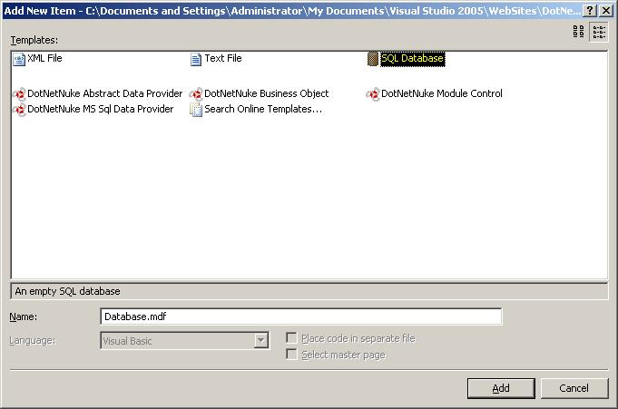

This section includes more detailed information on how to create a SQL Server 2005 Express Database file for use with DotNetNuke.
1. In Solution Explorer select the App_Data folder, right-click on the folder and select Add New Item....
2. In the Add New Item Dialog, select SQL Database, and click Add

The default database name is Database.mdf. If you decide to use a different filename you will have to edit the connection string in web.config.
Back to Welcome page.